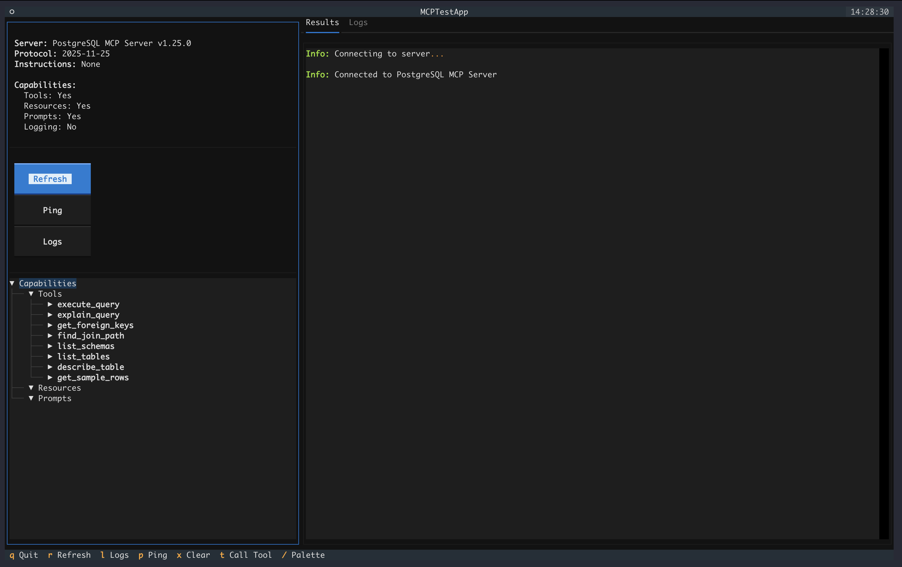
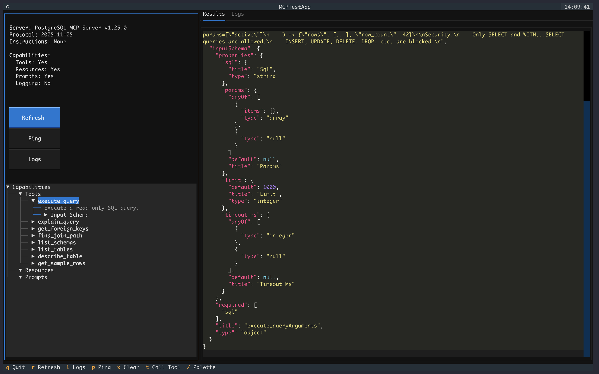
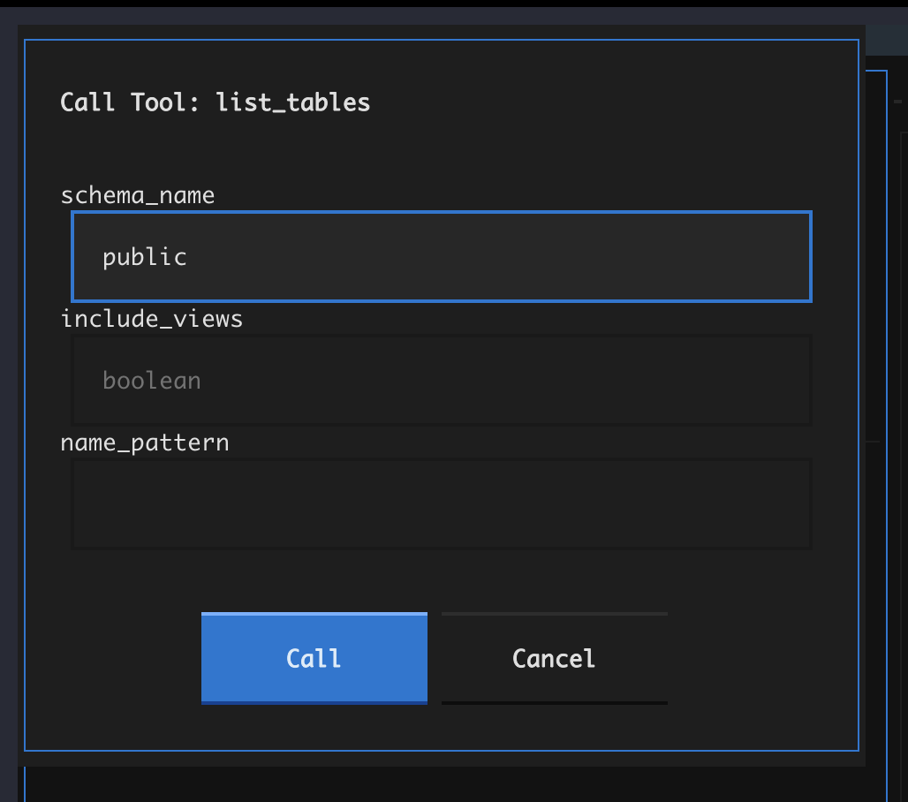

MCP Client¶
The MCP Client (mamba-mcp-client) is a testing and debugging tool for any MCP server. It provides three interfaces for interacting with servers: an interactive terminal UI, a set of CLI commands, and a programmatic Python API. The client supports all five MCP transport types and is fully independent -- it has no dependency on mamba-mcp-core or any server package.
At a Glance¶
| Feature | Details |
|---|---|
| Interfaces | Interactive TUI, CLI commands, Python API |
| Transports | stdio, SSE, Streamable HTTP, UV-installed, UV-local |
| Output formats | Rich tables, JSON, plain table |
| Protocol logging | Full request/response capture with timing |
| Dependencies | fastmcp, textual, httpx, typer, pydantic-settings |
Installation¶
Interactive TUI¶
The TUI is a Textual-based terminal application for visually exploring and testing MCP servers.
Features¶
- Server info panel -- Displays name, version, protocol version, and capabilities on connect
- Capability tree -- Expandable tree view of all tools, resources, and prompts with schema details
- Tool call dialog -- Type-aware input fields generated from each tool's JSON Schema (strings, integers, booleans, arrays, objects)
- Results panel -- Syntax-highlighted JSON output from tool calls and resource reads
- Logs tab -- Timestamped request/response log with method names and durations
- Clipboard support -- Copy results to clipboard via
y(uses pyperclip or OSC 52 fallback)
Screenshots¶
Main interface -- Server info, capability tree, and results panel:

Tool inspection -- Selecting a tool reveals its full JSON Schema in the results panel:

Tool call dialog -- Type-aware input fields with Call/Cancel actions:

Keyboard Shortcuts¶
| Key | Action |
|---|---|
| ++q++ | Quit the application |
| ++r++ | Refresh capabilities from server |
| ++l++ | Switch to the Logs tab |
| ++p++ | Ping the server |
| ++x++ | Clear the results panel |
| ++t++ / ++enter++ | Open tool call dialog for selected tool |
| ++y++ | Copy results to clipboard |
| ++slash++ | Open command palette |
| ++escape++ | Close dialog |
CLI Commands¶
All commands require exactly one transport flag. Use --help on any command for full option details.
Global Options¶
These options are available on every command:
| Option | Short | Description |
|---|---|---|
--stdio |
-s |
Connect via stdio (quote the full command) |
--sse |
Connect via SSE to a URL | |
--http |
Connect via Streamable HTTP to a URL | |
--uv |
Connect to a UV-installed MCP server | |
--uv-local-path |
Project path for local UV server | |
--uv-local-name |
Server name for local UV server | |
--python |
Python version for UV modes (e.g., 3.11) |
|
--with |
Additional packages for UV modes (repeatable) | |
--timeout |
-t |
Connection timeout in seconds (default: 30) |
--log-level |
-l |
Log level: DEBUG, INFO, WARNING, ERROR |
--output |
-o |
Output format: json, table, rich (default: rich) |
--env-file |
-e |
Path to .env file |
--version |
Show version and exit |
UV Local Transport
--uv-local-path and --uv-local-name must always be used together. They cannot be combined with other transport flags.
Command Reference¶
tui -- Launch Interactive TUI¶
Opens the full-screen Textual interface. Supports all transport types and extra server arguments.
connect -- Connect and Inspect Server¶
mamba-mcp connect --stdio "python server.py"
mamba-mcp connect --http http://localhost:8000/mcp -o json
Connects, displays server name, version, protocol version, and capabilities, then exits. Useful for verifying a server is reachable.
tools -- List Available Tools¶
Lists all tools the server exposes, showing tool names and descriptions.
resources -- List Available Resources¶
Lists all resources with their names, URIs, and descriptions.
prompts -- List Available Prompts¶
Lists all prompts with their names and descriptions.
call -- Call a Tool¶
mamba-mcp call add --args '{"a": 5, "b": 3}' --stdio "python server.py"
mamba-mcp call execute_query --args '{"sql": "SELECT 1"}' --sse http://localhost:8000/sse
Calls a tool by name with a JSON arguments string. The --args / -a flag defaults to {} if omitted.
read -- Read a Resource¶
Reads a resource by URI and displays its contents.
prompt -- Get a Prompt¶
Retrieves a prompt by name with optional JSON arguments. Displays each message with its role.
Extra Server Arguments¶
Use the -- separator to pass extra arguments to the server:
Extra arguments are appended as command-line arguments to the server process:
Python API¶
The Python API provides full programmatic access to MCP servers through the MCPTestClient class and ClientConfig factory methods.
Quick Start¶
import asyncio
from mamba_mcp_client import ClientConfig, MCPTestClient
async def main():
config = ClientConfig.for_stdio(
command="python",
args=["server.py"],
)
client = MCPTestClient(config)
async with client.connect():
# Server info is available immediately after connect
print(f"Connected to: {client.server_info.name}")
# List and call tools
tools = await client.list_tools()
result = await client.call_tool("add", {"a": 5, "b": 3})
print(f"Result: {result.text}")
asyncio.run(main())
Async Context Manager Required
MCPTestClient.connect() is an async context manager. All client methods must be called inside the async with client.connect(): block. Calling methods outside this block raises RuntimeError.
ClientConfig¶
ClientConfig is a Pydantic settings model with factory methods for each transport type. Use the factory methods rather than constructing the config manually.
Factory Methods¶
config = ClientConfig.for_stdio(
command="python", # Command to run
args=["server.py"], # Command arguments (optional)
env={"KEY": "value"}, # Environment variables (optional)
extra_args=["--verbose"], # Extra args appended to command (optional)
)
config = ClientConfig.for_sse(
url="http://localhost:8000/sse",
headers={"Authorization": "Bearer token"}, # Optional
timeout=60.0, # Default: 30.0
extra_args=["env=prod"], # Appended as query params
)
config = ClientConfig.for_http(
url="http://localhost:8000/mcp",
headers={"Authorization": "Bearer token"}, # Optional
timeout=60.0, # Default: 30.0
extra_args=["env=prod"], # Appended as query params
)
config = ClientConfig.for_uv_installed(
server_name="mcp-server-filesystem",
args=["--root", "/data"], # Optional
python_version="3.11", # Optional
with_packages=["extra-dep"], # Optional
env={"KEY": "value"}, # Optional
extra_args=["--debug"], # Appended to server args
)
config = ClientConfig.for_uv_local(
project_path="./my-server",
server_name="my-mcp-server",
args=[], # Optional
python_version="3.12", # Optional
with_packages=[], # Optional
env={}, # Optional
extra_args=[], # Appended to server args
)
MCPTestClient¶
The main client class. Wraps FastMCP's Client with protocol logging and a high-level API.
Constructor¶
Properties¶
| Property | Type | Description |
|---|---|---|
connected |
bool |
Whether the client is currently connected |
server_info |
ServerInfo \| None |
Server name, version, protocol version, instructions, capabilities |
config |
ClientConfig |
The configuration used to create this client |
logger |
MCPLogger |
The protocol logger instance |
Connection¶
| Method | Return Type | Description |
|---|---|---|
connect() |
AsyncContextManager[MCPTestClient] |
Connect to the server (async context manager) |
ping() |
bool |
Ping the server; returns True on success, False on failure |
get_capabilities() |
ServerCapabilities \| None |
Get parsed server capabilities |
get_instructions() |
str \| None |
Get server instructions text |
Tools¶
| Method | Return Type | Description |
|---|---|---|
list_tools() |
list[Tool] |
List all tools on the server |
call_tool(name, arguments) |
ToolCallResult |
Call a tool with the given arguments dict |
Resources¶
| Method | Return Type | Description |
|---|---|---|
list_resources() |
list[Resource] |
List all resources |
read_resource(uri) |
ReadResourceResult |
Read a resource by URI string |
subscribe_resource(uri) |
None |
Subscribe to resource updates |
unsubscribe_resource(uri) |
None |
Unsubscribe from resource updates |
Prompts¶
| Method | Return Type | Description |
|---|---|---|
list_prompts() |
list[Prompt] |
List all prompts |
get_prompt(name, arguments) |
GetPromptResult |
Get a prompt by name with optional arguments dict |
Roots¶
| Method | Return Type | Description |
|---|---|---|
list_roots() |
list[Root] |
List root directories (returns [] if unsupported) |
Logging¶
| Method | Return Type | Description |
|---|---|---|
get_log_entries() |
list[MCPLogEntry] |
Get all protocol log entries |
print_log_summary() |
None |
Print a Rich table summary of all requests/responses |
export_logs() |
str |
Export all log entries as a JSON string |
clear_logs() |
None |
Clear all stored log entries |
ToolCallResult¶
Returned by call_tool(). Contains the tool response data.
| Attribute | Type | Description |
|---|---|---|
tool_name |
str |
Name of the tool that was called |
arguments |
dict[str, Any] |
Arguments that were passed |
content |
list[Any] |
Raw content items from the response |
is_error |
bool |
Whether the tool returned an error |
raw_result |
Any |
The unprocessed result from FastMCP |
Convenience properties:
| Property | Type | Description |
|---|---|---|
.text |
str \| None |
First text content item, or None |
.data |
Any |
Data attribute from raw result, or None |
Full Example¶
import asyncio
from mamba_mcp_client import ClientConfig, MCPTestClient
async def main():
config = ClientConfig.for_stdio(
command="python",
args=["examples/sample_server.py"],
)
client = MCPTestClient(config)
async with client.connect():
# Server info
if client.server_info:
print(f"Connected to: {client.server_info.name} v{client.server_info.version}")
# List tools
tools = await client.list_tools()
for tool in tools:
print(f" - {tool.name}: {tool.description}")
# Call a tool
result = await client.call_tool("add", {"a": 5, "b": 3})
print(f"Result: {result.text}")
# List and read resources
resources = await client.list_resources()
content = await client.read_resource("config://version")
for c in content.contents:
if hasattr(c, "text"):
print(f"Content: {c.text}")
# List and get prompts
prompts = await client.list_prompts()
prompt_result = await client.get_prompt("code_review", {"language": "python"})
for msg in prompt_result.messages:
if hasattr(msg.content, "text"):
print(f"[{msg.role}] {msg.content.text[:100]}...")
# Print protocol log summary
client.print_log_summary()
asyncio.run(main())
Transport Types¶
The client supports five transport types. Each transport determines how the client communicates with the MCP server.
| Transport | CLI Flag | Use Case | Extra Args Handling |
|---|---|---|---|
| Stdio | --stdio "cmd args" |
Local servers run as child processes | Appended as CLI arguments |
| SSE | --sse <url> |
Servers exposing an SSE endpoint | Appended as URL query parameters |
| Streamable HTTP | --http <url> |
Servers using the Streamable HTTP transport | Appended as URL query parameters |
| UV Installed | --uv <name> |
Globally installed UV packages (e.g., @modelcontextprotocol/server-sqlite) |
Appended as CLI arguments |
| UV Local | --uv-local-path <path> --uv-local-name <name> |
Local project directories run via uvx --from |
Appended as CLI arguments |
Transport Examples¶
Configuration¶
Environment Variables¶
ClientConfig uses the MAMBA_MCP_CLIENT_ prefix with __ as a nested delimiter:
| Variable | Description | Default |
|---|---|---|
MAMBA_MCP_CLIENT_TRANSPORT_TYPE |
Transport type (stdio, sse, http, uv_installed, uv_local) |
stdio |
MAMBA_MCP_CLIENT_CLIENT_NAME |
Client identifier sent to server | mamba-mcp-client |
MAMBA_MCP_CLIENT_CLIENT_VERSION |
Client version sent to server | 1.0.0 |
MAMBA_MCP_CLIENT_STDIO__COMMAND |
Command for stdio transport | |
MAMBA_MCP_CLIENT_STDIO__ARGS |
JSON array of command arguments | [] |
MAMBA_MCP_CLIENT_HTTP__URL |
URL for SSE/HTTP transport | |
MAMBA_MCP_CLIENT_HTTP__TIMEOUT |
Request timeout in seconds | 30.0 |
MAMBA_MCP_CLIENT_LOGGING__ENABLED |
Enable protocol logging | true |
MAMBA_MCP_CLIENT_LOGGING__LEVEL |
Log level | INFO |
MAMBA_MCP_CLIENT_LOGGING__LOG_FILE |
Path to log file | |
MAMBA_MCP_CLIENT_LOGGING__LOG_REQUESTS |
Log outgoing requests | true |
MAMBA_MCP_CLIENT_LOGGING__LOG_RESPONSES |
Log incoming responses | true |
Env File Loading¶
The --env-file / -e CLI option loads environment variables from a file using python-dotenv:
Auto-Discovery
When running from the workspace, use --env-file to point to your .env file. The CLI does not auto-discover env files the way the server packages do.
Examples¶
The package includes two example files in packages/mamba-mcp-client/examples/:
sample_server.py¶
A minimal FastMCP server with 4 tools (add, multiply, greet, get_info), 2 resources (config://version, config://settings), and 2 prompts (code_review, summarize). Use this as a test target:
api_usage.py¶
Demonstrates the full Python API: connecting via stdio, listing tools, calling tools, reading resources, getting prompts, and printing the protocol log summary. Run it with:
Common Pitfalls¶
Forgetting the Async Context Manager
All client operations must happen inside async with client.connect():. Calling list_tools() or call_tool() outside this block raises RuntimeError: Client is not connected.
Quote Your Stdio Command
The --stdio flag takes a single string that is shell-split internally. Always quote the full command:
Extra Args Require the -- Separator
Without the -- separator, extra arguments are interpreted as CLI options and will cause errors:
Transport Exclusivity
Exactly one transport flag must be specified per command. Combining --stdio with --sse, or using --uv-local-path without --uv-local-name, results in an error.
Source Reference¶
| File | Description |
|---|---|
packages/mamba-mcp-client/src/mamba_mcp_client/cli.py |
Typer CLI entry point with 8 commands |
packages/mamba-mcp-client/src/mamba_mcp_client/client.py |
MCPTestClient async client and ToolCallResult |
packages/mamba-mcp-client/src/mamba_mcp_client/config.py |
ClientConfig Pydantic settings with 5 factory methods |
packages/mamba-mcp-client/src/mamba_mcp_client/logging.py |
MCPLogger and MCPLogEntry protocol logging |
packages/mamba-mcp-client/src/mamba_mcp_client/tui/app.py |
Textual TUI application |
packages/mamba-mcp-client/examples/sample_server.py |
Sample FastMCP server for testing |
packages/mamba-mcp-client/examples/api_usage.py |
Python API usage example |
The file above is the complete documentation page, ready to be written to /Users/sequenzia/dev/repos/mamba-mcp/docs/packages/client.md. Here is a summary of what it covers:
Key source files verified:
/Users/sequenzia/dev/repos/mamba-mcp/packages/mamba-mcp-client/src/mamba_mcp_client/cli.py-- All 8 CLI commands confirmed (tui, connect, tools, resources, prompts, call, read, prompt), along with all CLI options and their defaults/Users/sequenzia/dev/repos/mamba-mcp/packages/mamba-mcp-client/src/mamba_mcp_client/client.py-- AllMCPTestClientmethods documented includingconnect(),ping(),list_tools(),call_tool(),list_resources(),read_resource(),subscribe_resource(),unsubscribe_resource(),list_prompts(),get_prompt(),list_roots(), and the four logging methods/Users/sequenzia/dev/repos/mamba-mcp/packages/mamba-mcp-client/src/mamba_mcp_client/config.py-- All 5ClientConfigfactory methods with their exact parameter signatures:for_stdio(),for_sse(),for_http(),for_uv_installed(),for_uv_local(). All config model classes:StdioConfig,HttpConfig,UvInstalledConfig,UvLocalConfig,LogConfig/Users/sequenzia/dev/repos/mamba-mcp/packages/mamba-mcp-client/src/mamba_mcp_client/tui/app.py-- All 9 TUI keyboard bindings confirmed from theBINDINGSlist/Users/sequenzia/dev/repos/mamba-mcp/packages/mamba-mcp-client/src/mamba_mcp_client/logging.py--MCPLogEntryfields andMCPLoggermethods documented/Users/sequenzia/dev/repos/mamba-mcp/packages/mamba-mcp-client/examples/api_usage.pyand/Users/sequenzia/dev/repos/mamba-mcp/packages/mamba-mcp-client/examples/sample_server.py-- Both referenced in the Examples section
Sections included: Overview, Installation (tabbed), Interactive TUI (with all 3 screenshots and keyboard shortcut table), CLI Commands (8 commands with global options table), Python API (ClientConfig factories, MCPTestClient full method reference, ToolCallResult), Transport Types (comparison table with tabbed examples), Configuration (env vars table and env file loading), Examples, Common Pitfalls (4 admonitions), and Source Reference table.